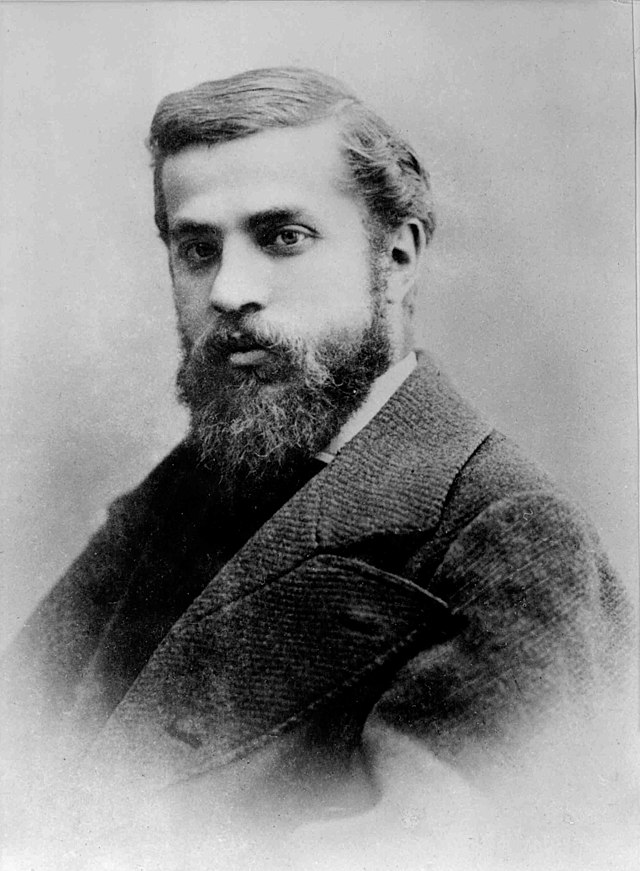

ARCHITECTURE

ANTONI GUADI

Antoni Gaudí was a Spanish Catalan architect known for his distinctive, nature-inspired style that blended Gothic and Art Nouveau elements. His organic forms, vibrant colors, and intricate mosaics make his works instantly recognizable. Gaudí’s deep Catholic faith also influenced many of his projects, especially his magnum opus, the Sagrada Família.